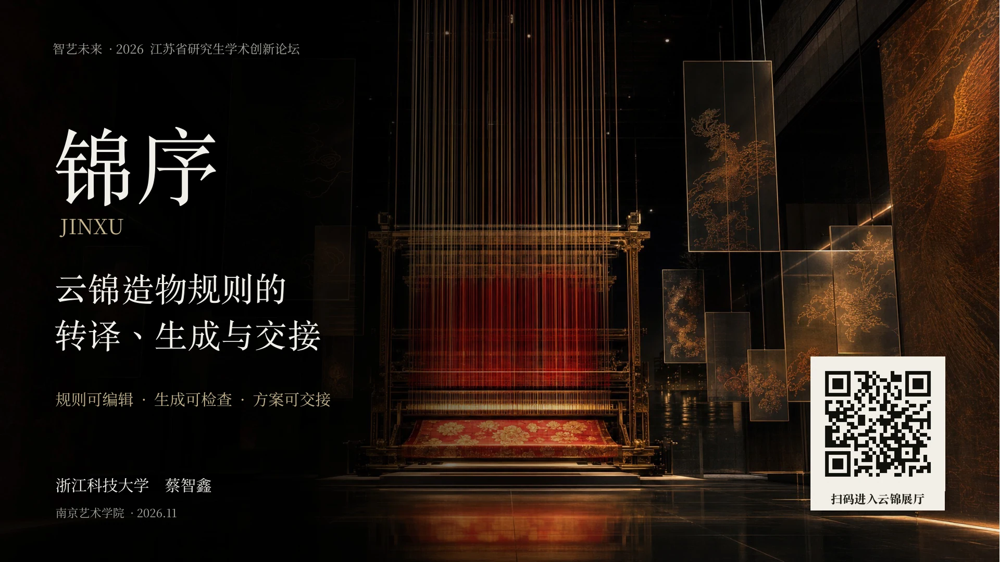

智艺未来 · 学术汇报
云锦造物规则的
转译、生成与交接
锦序把南京云锦的铺排和配色规则写成可编辑的设计参数。以半落为例，奇数列错开半格，再检查云纹接缝能否对齐。
项目整理了 12 条候选规则，用 6 项简化检测比较 180 张生成图。纹样参数、配色与出处存入设计包，供下一位设计者接续编辑。
蔡智鑫 · 浙江科技大学

智艺未来 · 学术汇报
锦序把南京云锦的铺排和配色规则写成可编辑的设计参数。以半落为例，奇数列错开半格，再检查云纹接缝能否对齐。
项目整理了 12 条候选规则，用 6 项简化检测比较 180 张生成图。纹样参数、配色与出处存入设计包，供下一位设计者接续编辑。
蔡智鑫 · 浙江科技大学